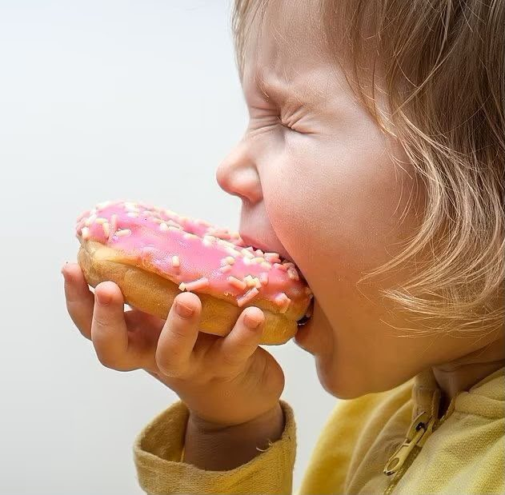

Tren Cut Sugar pada Anak, Seberapa Penting Pembatasan Gula Sejak Dini?

Oleh:Fathiya Hanin Zahrani Qolbi
Di tengah maraknya makanan dan minuman manis yang mudah dijumpai, tren cut sugar atau mengurangi konsumsi gula mulai relevan dibicarakan dalam pola asuh keluarga. Namun, seberapa penting pembatasan gula bagi anak, dan apakah orang tua perlu benar-benar menghindarkan anak dari makanan manis?
Mengapa Pembatasan Gula Penting Sejak Dini?
Gula memang menjadi salah satu sumber energi bagi tubuh. Akan tetapi, konsumsi gula berlebihan dapat meningkatkan risiko masalah kesehatan. Organisasi Kesehatan Dunia atau World Health Organization (WHO) menjelaskan bahwa konsumsi gula bebas yang tinggi berkaitan dengan peningkatan risiko gigi berlubang. Gula bebas mencakup gula yang ditambahkan ke dalam makanan dan minuman, serta gula yang secara alami terdapat dalam madu, sirop, dan jus buah.
Selain itu, asupan gula berlebih dapat berkontribusi pada kenaikan berat badan apabila energi yang masuk melebihi kebutuhan tubuh. Pembatasan gula juga membantu anak membangun kebiasaan makan yang lebih sehat sejak dini.
Berapa Banyak Gula yang Aman untuk Anak?
WHO merekomendasikan konsumsi gula bebas kurang dari 10 persen dari total asupan energi harian, dan pengurangan hingga di bawah 5 persen disarankan untuk manfaat kesehatan tambahan. Sementara itu, American Academy of Pediatrics (AAP) menyarankan gula tambahan pada anak usia dua tahun ke atas tidak melebihi 25 gram atau sekitar enam sendok teh per hari, serta menghindarinya pada anak di bawah dua tahun.
Perlu diingat, gula dalam buah utuh tidak termasuk gula bebas dalam pedoman WHO, sehingga membatasi gula tambahan bukan berarti anak harus menghindari buah.
Gula Tidak Hanya Berasal dari Makanan Manis
Gula tambahan juga tersembunyi dalam produk yang tidak selalu terasa sangat manis, seperti minuman kemasan, sereal sarapan, yoghurt berpemanis, saus, dan makanan olahan. Minuman berpemanis seperti teh manis, minuman bersoda, dan minuman kekinian perlu mendapat perhatian khusus.
Orang tua dapat membiasakan anak minum air putih, menyediakan buah utuh sebagai camilan, serta membaca label kemasan sebelum membeli produk. Keteladanan orang tua dalam kebiasaan makan juga sangat berpengaruh.
Cut Sugar Bukan Berarti Menghilangkan Gula Sepenuhnya
Pendekatan terhadap anak sebaiknya dilakukan secara positif. Alih-alih melarang seluruh makanan manis secara tiba-tiba, orang tua dapat menjelaskan pentingnya variasi makanan tanpa membuat anak merasa bersalah atau takut terhadap makanan. Anak tetap membutuhkan energi dan zat gizi yang cukup untuk tumbuh dan berkembang, sehingga fokusnya adalah mengurangi gula tambahan, bukan menghilangkan semua makanan bercita rasa manis.
Apabila anak memiliki kondisi kesehatan tertentu atau mengalami masalah pertumbuhan, pengaturan pola makan sebaiknya dikonsultasikan dengan dokter atau ahli gizi.
Pada akhirnya, cut sugar tidak perlu menjadi aturan yang mengekang. Dengan pendampingan yang tepat, kebiasaan ini dapat menjadi langkah awal bagi anak untuk menjalani pola hidup sehat hingga dewasa.
Daftar Pustaka
American Academy of Pediatrics. (n.d.). How to reduce added sugar in your child’s diet: AAP tips. HealthyChildren.org. healthychildren.org
Kementerian Kesehatan Republik Indonesia. (2024, 18 Desember). Batasi gula dan garam untuk MPASI. kemkes.go.id
World Health Organization. (2015). Guideline: Sugars intake for adults and children. who.int